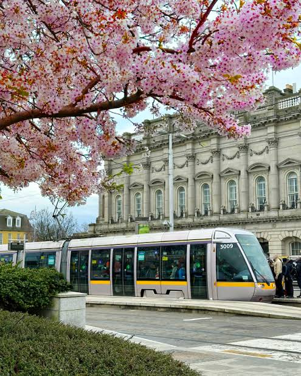

The Luas Tram Network
SDG 11 - Sustainable Cities SDG 13 - Climate ActionLuas (Irish for "speed") is Dublin's light rail tram system, operated by Transdev on behalf of Transport Infrastructure Ireland (TII). It connects key areas of Dublin with a fast, frequent, and low-emission service. Since opening in 2004, the Luas has grown into one of the most heavily used tram systems in Europe relative to city size.

Luas Lines Overview
Luas Cross City Expansion (2017)
The Luas Cross City project extended the Green Line northward through the city centre, linking it with the existing Red Line at O'Connell Street. This €368 million project completed in December 2017 was a transformative moment for Dublin public transport, creating a connected tram network through the heart of the capital.
Why Trams are Sustainable
- Electric trams emit no exhaust fumes at point of use.
- Each tram replaces up to 150–200 car journeys per trip.
- Ireland's electricity grid is increasingly powered by wind energy, making trams greener over time.
- Trams have a 30–40 year operational lifespan, reducing manufacturing emissions.
Luas Performance Statistics
| Year | Annual Passengers | CO₂ Saved (estimated) | Punctuality Rate |
|---|---|---|---|
| 2010 | 26.3 million | ~45,000 t | 92% |
| 2015 | 34.7 million | ~59,000 t | 93% |
| 2019 | 41.2 million | ~71,000 t | 94% |
| 2022 | 37.8 million | ~65,000 t | 93% |
| 2023 | 40.1 million | ~69,000 t | 95% |
Sources: Transport Infrastructure Ireland (TII) Annual Reports 2010–2023.
Luas in Action
Watch this overview of the Luas network and its role in Dublin's sustainable transport strategy:
Future Plans - Luas Expansion
- MetroLink: A new underground metro line planned to run from Swords to Sandyford, connecting with both Luas lines at key interchange points.
- Luas to Finglas: A proposed extension of the Green Line northward to serve the Finglas area of north Dublin.
- Fleet upgrade: Plans to introduce longer, higher-capacity trams to reduce overcrowding on the Green Line.
- Renewable energy: TII is exploring powering the Luas entirely from renewable electricity sources by 2030.